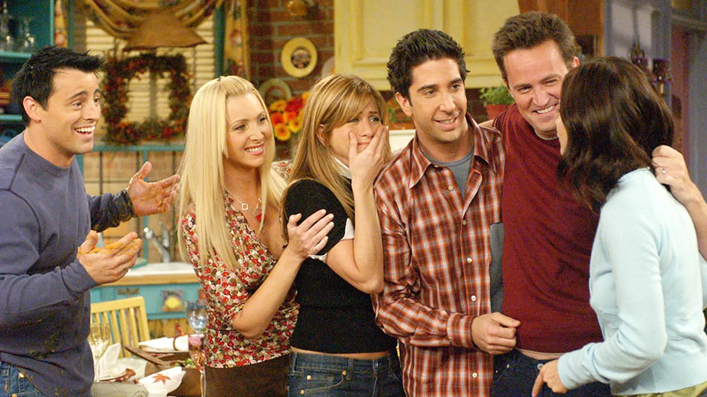
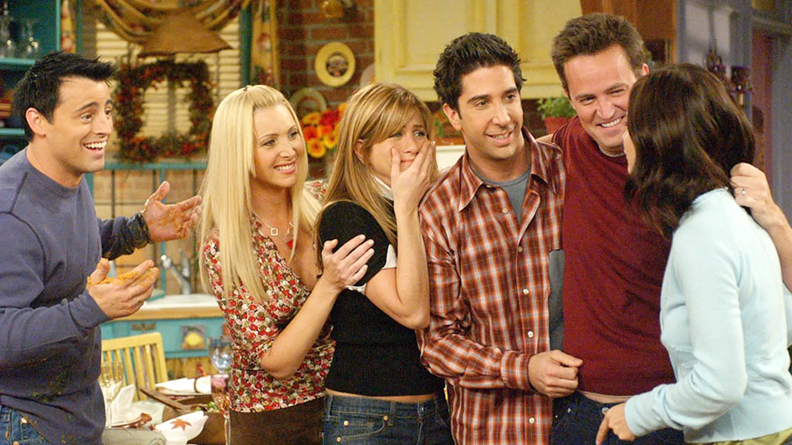

Добро пожаловать на сайт про сериал "Друзья"!
"Друзья" — это американский ситком, который рассказывает о шести близких друзьях, живущих в Нью-Йорке. Шоу стало культовым благодаря своей уморительной комедии и запоминающимся персонажам.
"Друзья" — это американский ситком, который рассказывает о шести близких друзьях, живущих в Нью-Йорке. Шоу стало культовым благодаря своей уморительной комедии и запоминающимся персонажам.
